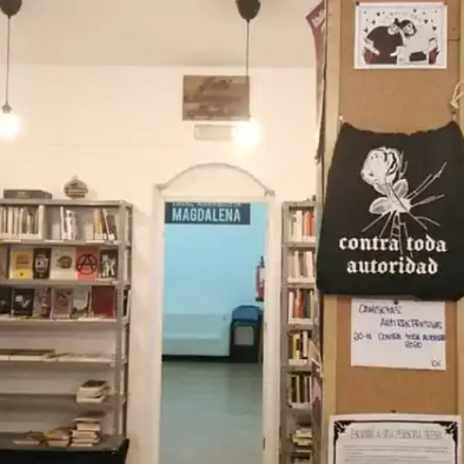
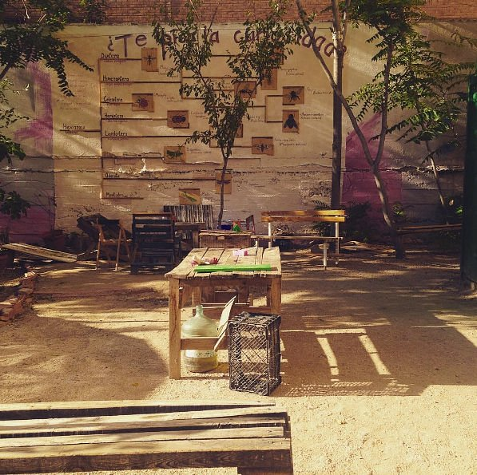
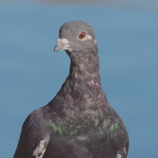
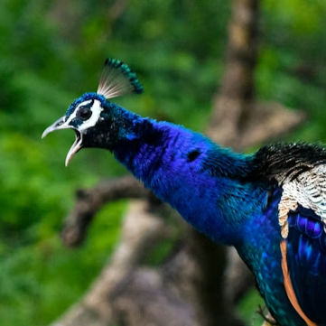

TercerosEspacios
El término 'terceros espacios' viene de Estados Unidos donde el sociólogo Ray Oldenburg lo define como espacios de acceso libre informales que se diferencian del 'primer' espacio (casa) y el 'segundo' (trabajo). Un lugar crucial para la construcción de comunidad, interacción social y descanso.
En este momento sociocultural en el que las relaciones humanas pasan por datáfono desde Madriz Local queremos ofrecer alternativas.
Esta lista no es exhaustiva y se encuentra en constante actualización y revisión.
LOCAL ANARQUISTA MAGDALENA
Este local en el barrio de Lavapiés ofrece préstamo de libros de caracter social, político y cultural al igual que préstamo onsite de equipo de grabación de sonido y espacio de reunión..
WebESTA ES UNA PLAZA
"Abrimos domingos y días soleados" Un espacio abandonado por el Madriz institucional convertido por vecines en parque, huerto comunitario y espacio verde al aire libre.
InstagramLA CASA ENCENDIDA

En un edificio histórico se encuentra la sede de la Fundación Montemadrid de acceso libre con espacios de estudio y trabajo, ocio, terraza, patio interior y exposiciones artísticas gratuítas..
WebPor motivos de seguridad en esta sección no se inlcuyen fotografías de los lugares.
CSO LA ROSA
En el barrio de Latina hay un espacio que vela por las vecinas con actividades culturales gratuitas, espacios o generadores autónomos que fueron un punto clave en el barrio durante el apagón del 28 de abril 2025. A diario se realizan actividades abiertas a cualquiera como encuentros de idiomas, creación artística o festivales independientes.
InstagramCSO LA ENREDADERA

Entre Tetuán y Cuatro Caminos hay un edificio construido sobre los pilares de la comunidad, la organización ciudadana tanto en ámbitos políticos como sociales. En La Enredadera de Tetuán se reunen diferentes asociaciones como HackLab La Raiz, Sindicato de Vivienda de Tetuán al igual que se organizan sesiones de Ballroom o Rave.
InstagramCSO EKO CARABANCHEL
Actualmente en lucha contra un fondo de inversión estadounidense, el EKO o la EKO, depende de a quién pregunte ha sido lugar de encuentro para vecines y visitantes en Carabanchel por más de 10 años. Entre sus actividades se encuentran clases de autodefensa, festivales de autoedición o proyecciones y coloquios.
Instagram